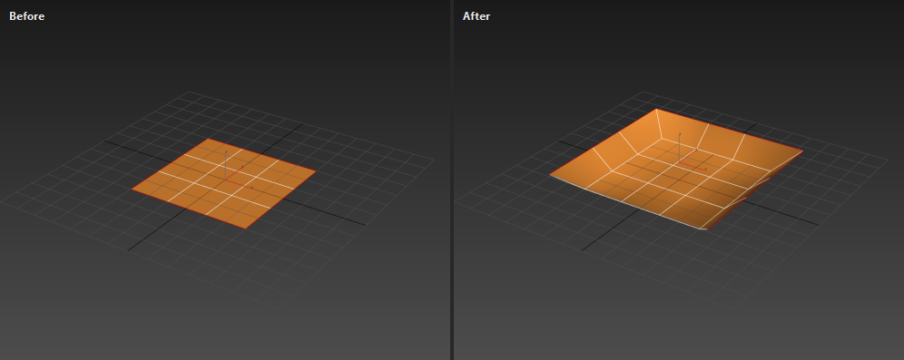
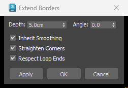
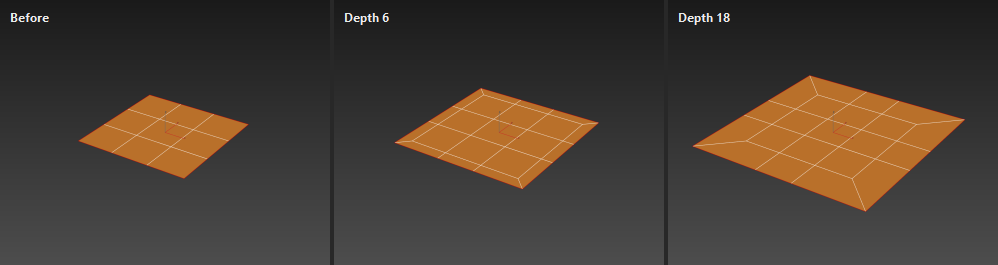
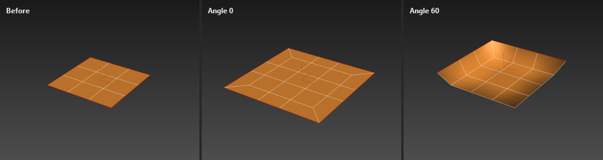
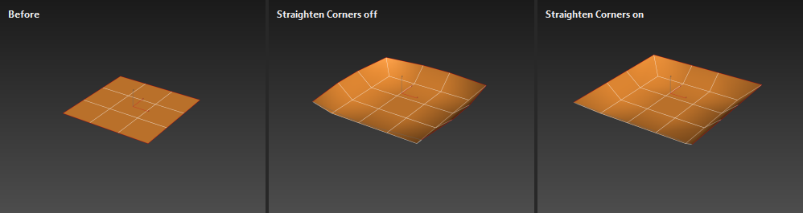
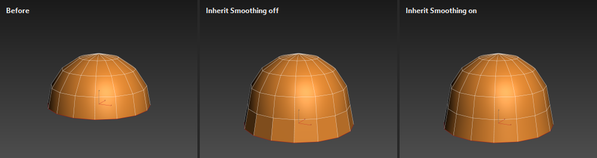

Tools / Extend Borders
Extend Borders
Grow a new row of polygons outward from open edges.
What it does
Extend Borders takes the selected open (border) edges of an Editable Poly and grows a row of new polygons outward from them. You choose how far it goes and which way it bends.


Run Extend Borders and change Depth and Angle in the dialog while the mesh grows.
How to use it
- Select open (border) edges of an Editable Poly.
- In the right-click menu, choose Extend Borders (right after Extrude).
- In the small window, set Depth and Angle. The new row shows while you change them.
- Apply keeps the row and starts another one from the new border. OK keeps it and closes. Cancel removes what you added.
Options
| Setting | What it does |
|---|---|
| Depth | How far the new row reaches. |
| Angle | Turns the row toward the surface's normal, from -180 to 180 degrees. |
| Inherit Smoothing | New polygons take the smoothing groups and material ID of the polygon they grow from. |
| Straighten Corners | Corner vertices are placed so the new border stays parallel to the old one. |
| Respect Loop Ends | At the end of an open loop, the angle follows only the polygon at that end. |




Good to know
- Your settings and the window position are remembered between sessions.
- The whole thing is one undo step.
- The new polygons face the same way as their neighbours.